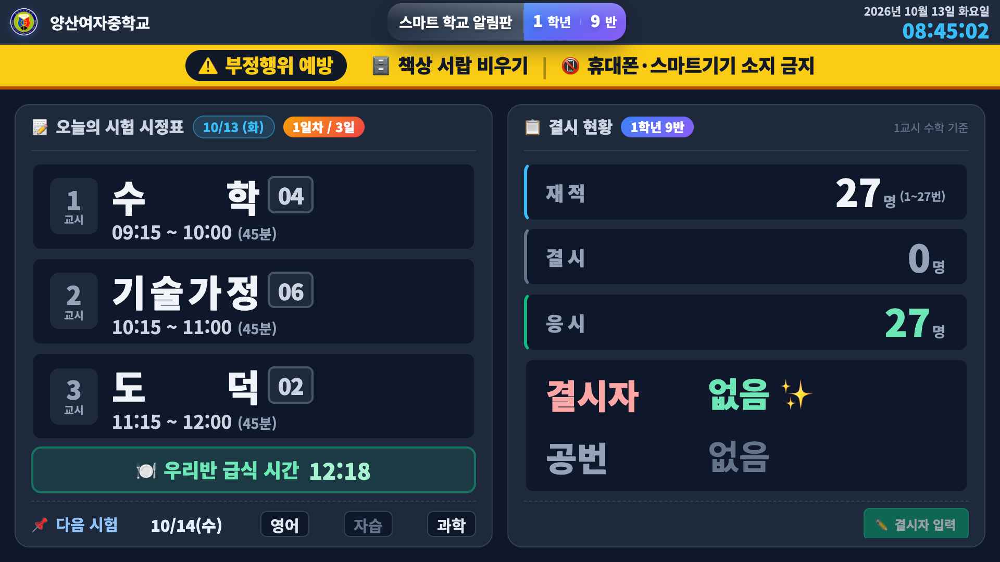
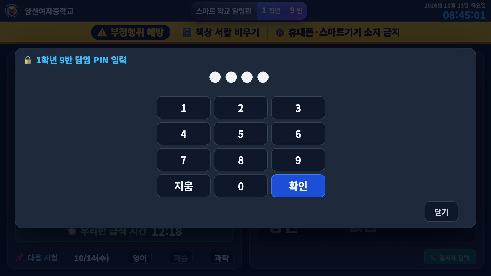
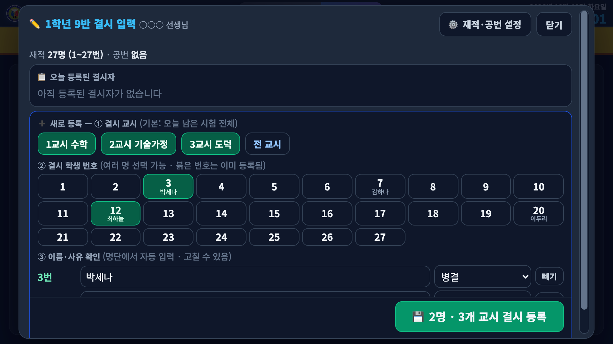
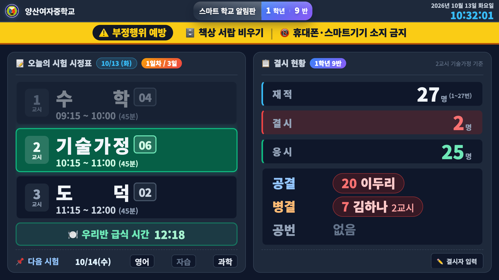

📝 시험 기간 전자칠판 사용 안내
담임 선생님용 · 아침 조회 때 1분이면 끝납니다
✅ 시험 날에는 우리 반 전자칠판이 자동으로 시험 화면으로 바뀝니다. 따로 켜실 필요 없어요.
아침 조회 때 결시자 입력 — 4단계
1 오른쪽 아래 ✏️ 결시자 입력 터치

시험 시작 전에는 버튼이 초록색으로 깜빡여요.
2 담임 PIN 입력 → 확인

관리자 페이지 담임 로그인 번호와 같아요. (바꾸지 않았다면 2026)
3 결석한 학생 번호 터치 (여러 명 가능)

교시는 오늘 남은 시험 전체가 자동으로 골라져 있어요. 번호를 누르면 이름이 자동으로 나와요.
4 사유 확인 → 💾 결시 등록 터치

사유는 답안지와 같은 공결·병결·미인정결·기타결·상고. 등록하면 결시·응시 수와 결시자가 바로 바뀝니다.
💡 버튼을 누를 때마다 PIN을 물어봐요. 창을 닫거나 3분간 손대지 않으면 자동으로 잠겨서 학생이 만질 수 없습니다.
🕘 지각한 학생이 시험을 본 경우
✏️ 결시자 입력 → PIN 입력
위쪽 오늘 등록된 결시자에서 그 학생의 교시 칸을 한 번 누르면 빨갛게 "삭제?"로 바뀌어요.
한 번 더 누르면 삭제됩니다.
예) 1교시 결시 후 2교시부터 시험 → 2·3교시 칸만 삭제
⚙️ 처음 한 번만 — 우리 반 재적·공번 확인
결시자 입력 창 오른쪽 위 ⚙️ 재적·공번 설정
재적: −/＋ 로 우리 반 학생 수
공번: 전출 등으로 비어 있는 번호를 터치
💾 저장 → 화면에 재적·응시·공번이 표시돼요.
👀 감독 선생님께
전자칠판 오른쪽 결시 현황을 답안지에 그대로 옮겨 적으시면 됩니다. 재적 옆에 번호 범위(1~○번), 결시자는 사유별 한 줄, 공번에는 정원 외 번호까지 함께 나옵니다. 지금 교시 결시자는 또렷하게, 다른 교시만 결시한 학생은 흐리게 보여요.
화면 맨 위 노란 띠로 책상 서랍 비우기 · 휴대폰·스마트기기 소지 금지를 함께 안내합니다.
문의: 1학년 9반 윤근관